📖 Evolution: Making Sense of Life — Study Guide
Zimmer & Emlen, 2nd edition. OCR-extracted from the Internet Archive scan.
18Chapters
388Pages
175Questions
776Diagrams
Ch 01 — The Whale and the Virus: How Scientists Study Evolution
No questions automatically extracted for this chapter.
Ch 02 — From Natural Philosophy to Darwin
Q001p15
Why is understanding evolution important?
- A)Understanding evolution can help us understand biodiversity issues associated
- B)Understanding evolution can help us understand the evolution of antibiotic
- C)Understanding evolution can help us understand our own genetic makeup and
- D)Allof the above
- A)Once biologists find all the missing links, they will be able to understand evolution.
- B)Evolution is a process that leads to more and more complex organisms.
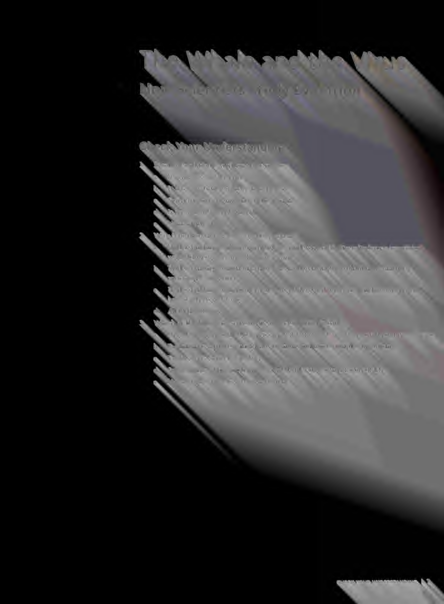
Q002p15
Which of the following statements about evolution is true?
- A)Once biologists find all the missing links, they will be able to understand evolution.
- B)Evolution is a process that leads to more and more complex organisms.
- C)Evolution is entirely random.
- E)None of the above is a true statement.
Q003p23
How do scientists use evidence to explain events that happened in the past?
- A)Camels
- C)Seals
- D)They are equally related to all of the above.
- A)A nasal opening that is shifted backwards
- B)A large powerful tail
- C)The presence of an involucrum
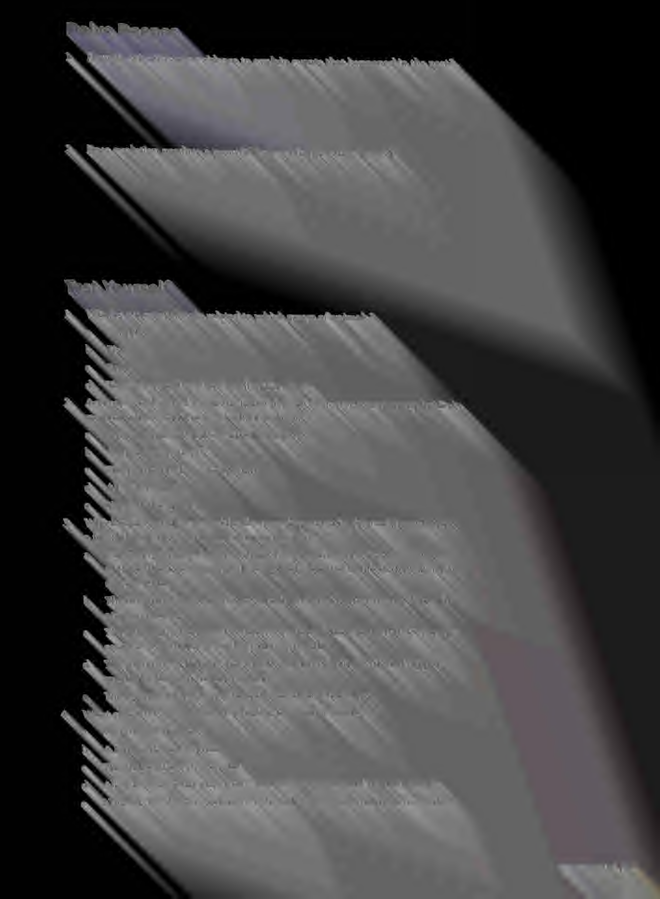
Q004p23
Whales are most closely related to which group of animals?
- A)Camels
- C)Seals
- D)They are equally related to all of the above.
- A)A nasal opening that is shifted backwards
- B)A large powerful tail
- C)The presence of an involucrum
Q005p23
Does evolution produce a peaceful balance in the natural world?
- A)Camels
- C)Seals
- D)They are equally related to all of the above.
- A)A nasal opening that is shifted backwards
- B)A large powerful tail
- C)The presence of an involucrum
Q006p23
According to Figure 1.8, which shared derived character (synapomorphy) links
- A)A nasal opening that is shifted backwards
- B)A large powerful tail
- C)The presence of an involucrum
- D)All of the above
- E)None of the above
- A)The teeth, because modern whales have peg-like teeth but Dorudon, one
Q007p23
Which trait would you consider the most important in determining whether
- A)The teeth, because modern whales have peg-like teeth but Dorudon, one
- B)The involucrum, because it has a unique from in cetaceans not found in
- C)The astragalus, because if cetaceans evolved from artiodactyls, then early
- D)The presence of flippers, because the earliest whale fossils had flippers
- A)Presence of flippers
- B)A long vertebral column
Q008p23
What characters of Dorudon are similar to modern whales?
- A)Presence of flippers
- B)A long vertebral column
- C)The shape of the involucrum
- D)All of the above are characters shared by Dorudon and modern whales.
- E)None of the above is a character shared by Dorudon and modern whales.
Q009p26
How would you define biological evolution?
- A)A gradual process in which something changes into a different and usually more
- A)Because mutations are always deleterious, and organisms with these deleterious
Q010p26
Why are mutations important in evolution?
- A)Because mutations are always deleterious, and organisms with these deleterious
- A)b.
- D)eG:
Q011p26
What kinds of evidence have scientists used to study the evolution of whales?
- A)b.
- D)eG:
Q012p35
What is the difference between how scientists use the word theory and how it is
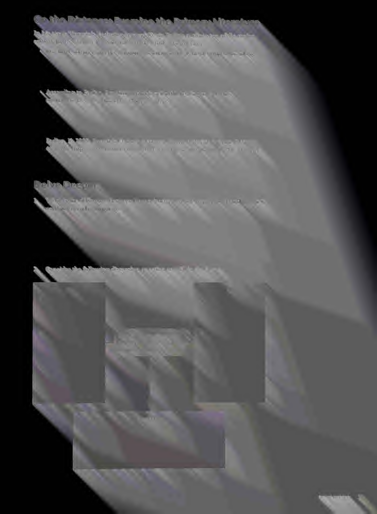
Q013p36
In which order would humans be classified according to Linnaeus?
- A)Hominidae
- B)Homo
- C)Animalia
- D)Mammalia
- E)Primates
- A)Charles Darwin
Q014p36
Who first proposed that life could change over time?
- A)Charles Darwin
- B)Georges Buffon
- C)Carl Linnaeus
- D)Alfred Russel Wallace
- A)The slow transformation of landscapes caused by erosion
- B)The rich diversity of fossil specie
Q015p36
What evidence did James Hutton use to reason that the Earth must be vastly old?
- A)The slow transformation of landscapes caused by erosion
- B)The rich diversity of fossil specie
- C)William Smith’s maps of fossil strata
- D)Volcanoes that radically transformed the Scottish landscape
- E)The patterns of fossils of different ages found throughout England
- A)Because he and Lamarck were competitors at the National Museum of
Q016p36
Why did Georges Cuvier reject Lamarck’s idea that species were not fixed?
- A)Because he and Lamarck were competitors at the National Museum of
- B)Because Lamarck did not believe in extinction
- C)Because his experience indicated that huge gaps existed among major
- D)Because his experience with fossils indicated that all species were created
- E)Because he believed the Earth was not old enough for species to change
- A)A guess based on a few facts that scientists try to prove as correct
Q017p36
How do you define a scientific theory?
- A)A guess based on a few facts that scientists try to prove as correct
- C)A set of laws that define the natural world
- D)A testable set of mechanisms or principles that explain a major aspect of
- E)A belief that scientists try to prove as fact
- A)Because Darwin and Wallace realized that poor people could not get
- B)Because Darwin and Wallace believed that populations get what they need
Q018p36
Why did Thomas Malthus’ arguments in An Essay on the Principle of Population
- A)Because Darwin and Wallace realized that poor people could not get
- B)Because Darwin and Wallace believed that populations get what they need
- C)Because Darwin and Wallace needed some support for their ideas about
- D)Because Darwin and Wallace realized that one generation of any organism
Q019p37
Is natural selection the only mechanism that can lead to biological evolution?
- A)Yes, because natural selection operates on the needs of organisms in their
- B)Yes, because Charles Darwin invented natural selection as part of his theory
- C)No, because evolution is entirely random
- D)No, because evolution can occur through other mechanisms such as
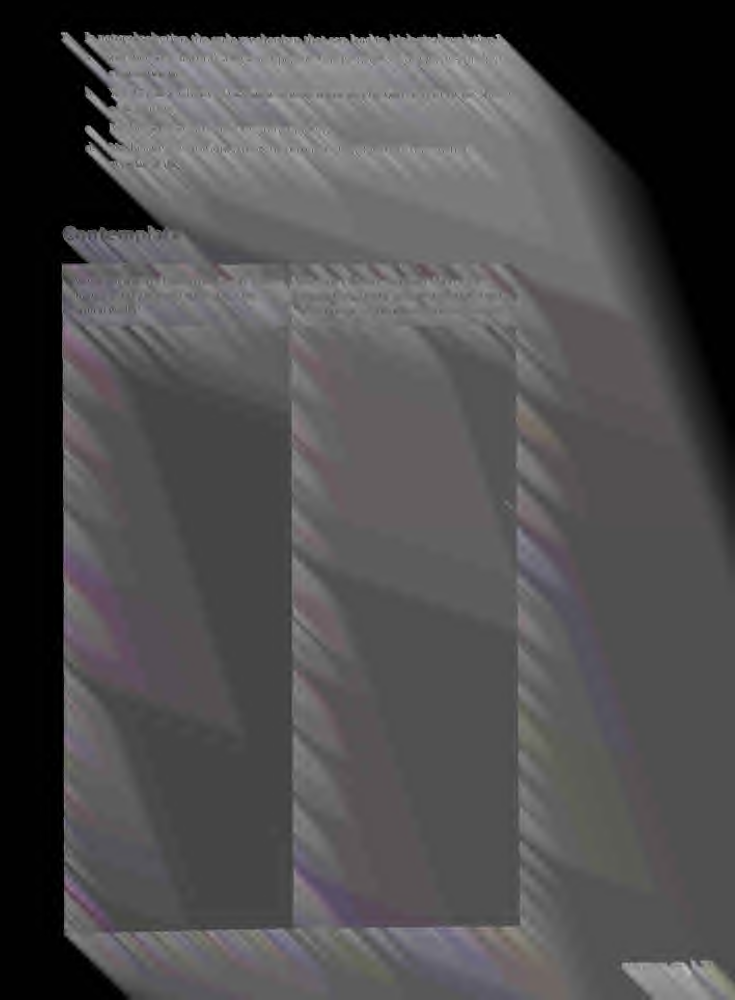
Ch 03 — What the Rocks Say: How Geology and Paleontology Reveal the History of Life
Q001p38
Why is the study of stratigraphy important to understanding evolutionary theory?
- A)Because stratigraphy provides evidence for the relative age of fossils
- C)Because stratigraphy characterizes the process of fossilization
- D)All of the above
- E)None of the above
- A)He strongly objected to Jean-Baptiste Lamarck’s ideas about life evolving from
- B)He invented paleontology.
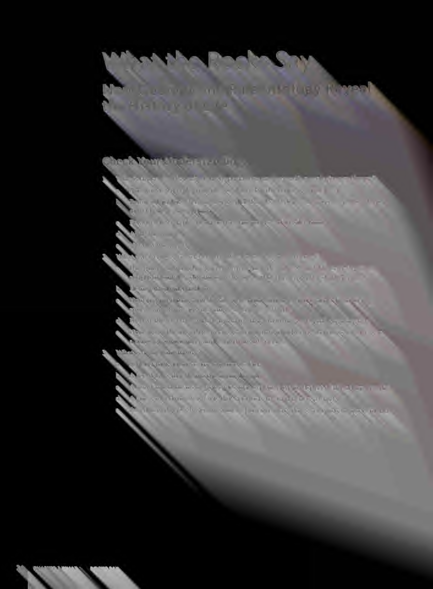
Q002p38
What was Georges Cuvier’s contribution to evolutionary theory?
- A)He strongly objected to Jean-Baptiste Lamarck’s ideas about life evolving from
- B)He invented paleontology.
- C)He recognized that some fossils were both similar to and distinct from living
- D)He was the first to organize and map strata according to a geological history.
- E)He rejected the idea that species evolved, instead believing that life’s history was
- A)A belief that scientists try to prove as fact
Q003p38
What is a scientific theory?
- A)A belief that scientists try to prove as fact
- B)A set of laws that define the natural world
- C)A set of mechanisms or principles that explain a major aspect of the natural world
- D)A guess based on a few facts that scientists try to prove as correct
- E)An educated guess based on some experience that allows scientists to test evidence
Q004p50
Why do scientists consider radiometric dating a valid way to measure the age
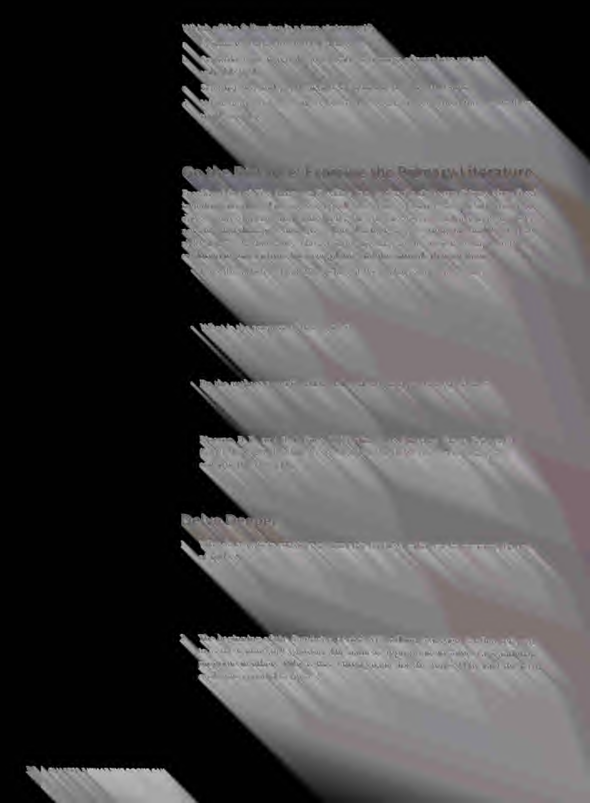
Q005p51
Why was Lord Kelvin’s estimate for the age of the Earth inaccurate?
- A)ec}
- A)d.
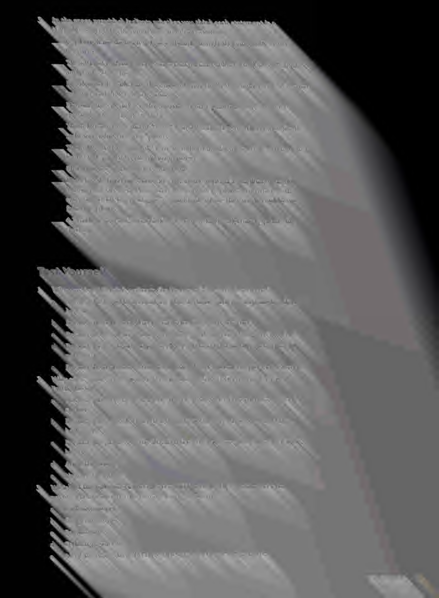
Q006p51
Why can’t scientists hope to find conventional fossils from very early in
- A)d.
- A)b.
- D)(oy
Q007p51
Which of the following molecules has NOT been used as a biomarker, an
- A)b.
- D)(oy
Q008p52
How confident are scientists about the discoveries related to the earliest signs of
- A)Very confident. Two scientists found organic carbon produced by photosyn-
- B)Fairly confident. Stromatolite formation is a process observable today, and
- C)Note very confident. Scientists all have different opinions about the oldest
- D)Not confident. Scientists constantly have to test new techniques, so they
- E)It’s all just a guess.
- A)Because cyanobacteria, the lineage of bacteria that carries out photosynthe-
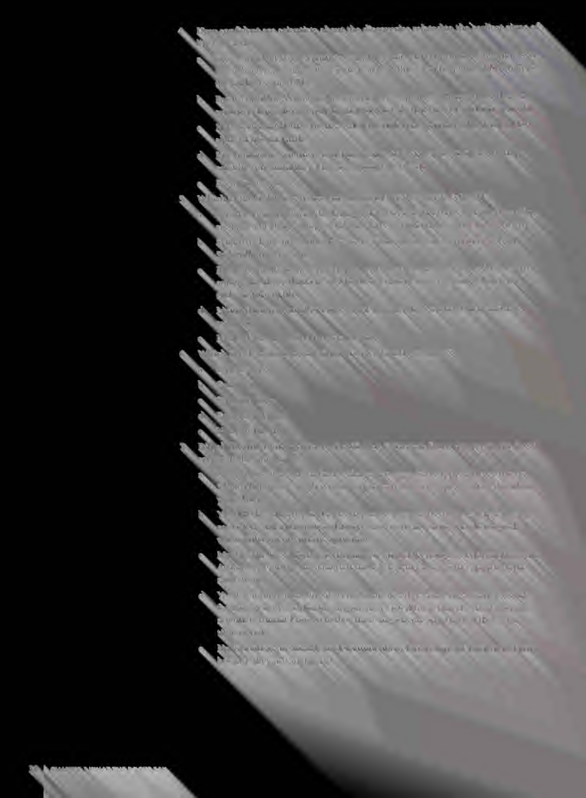
Q009p52
Which of the following statements about the history of life is TRUE?
- A)Because cyanobacteria, the lineage of bacteria that carries out photosynthe-
- B)Scientists have not found any fossils from before the Cambrian period,
- C)Because scientists have not been able to resolve many of the relationships
- D)Living bacteria can offer clues about how the first multicellular animals
- E)None of the above is a true statement.
- A)Prokaryotes
Q010p52
Which fossils often took the form of disks, fronds, or blobs?
- A)Prokaryotes
- B)Cambrian
- C)Stromatolites
- D)Ediacaran fauna
- E)None of the above
- A)No. The fossil record indicates that some organisms appeared as early as
Q011p53
Which group does the following idea not apply to “many of the most diverse
- A)Flowering plants
- B)Insects
- C)Birds
- D)Bacteria
Ch 04 — The Tree of Life: How Biologists Use Phylogeny to Reconstruct the Deep Past
Q001p54
How does homology relate to the theory of evolution?
- A)a.
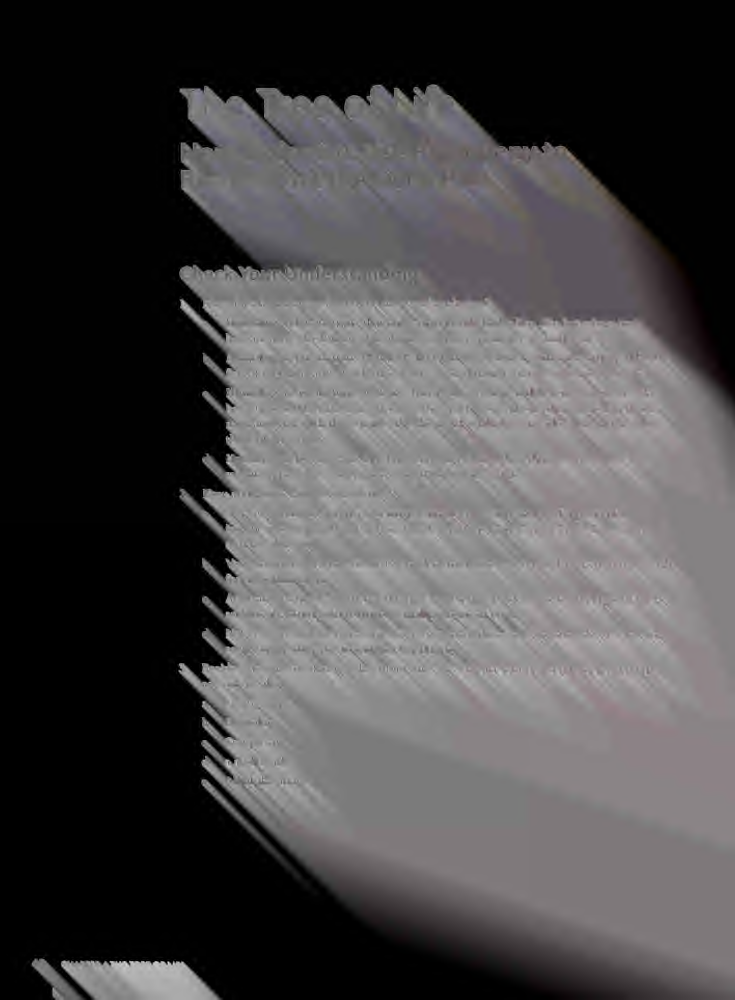
Q002p54
Besides radiometric dating, what other lines of evidence can be used to determine the
- A)b.
Q003p72
Which of the following is NOT a monophyletic group?
- A)b.
- D)e.
- A)7 |
Q004p72
Based on your understanding of Carl Linnaeus’ classification system, how
- A)7 |
Q005p73
How does including fossils in phylogenies of extant taxa affect the conclusions
- A)b.
- A)Allosaurids
- B)Compsognathids
- C)Tyrannosauroids
- D)Oviraptorosaurs
- E)None of the theropod dinosaurs had feathers
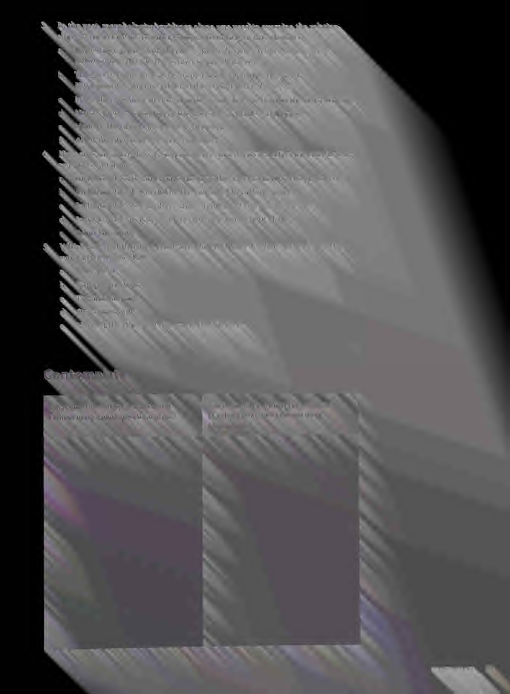
Q006p73
Which group of theropod dinosaurs did NOT have feathers according to the
- A)Allosaurids
- B)Compsognathids
- C)Tyrannosauroids
- D)Oviraptorosaurs
- E)None of the theropod dinosaurs had feathers
Q007p74
Why is heritable variation among individuals an important factor for natural selection?
- A)Because variation has to be heritable for a species to survive
- C)Because when individuals respond to the environment, they can pass the traits
- D)Because natural selection cannot act when all individuals are absolutely identical.
- E)Bothbandd
- A)The phylogeny on the left shows that you and your sister are more closely related to
Q008p74
How can the phylogeny on the left be used to understand the phylogeny on the right?
- A)The phylogeny on the left shows that you and your sister are more closely related to
- B)The phylogeny on the left shows that the relationship between humans and frogs
- C)The phylogeny on the left shows that your cousins must be more closely related
- D)The phylogeny on the right shows that humans are more closely related to goldfish
Ch 05 — Raw Material: Heritable Variation Among Individuals
Q001p87
Why aren’t the mutations that occur in skin cells or in other organs, such as the
- A)(Sy
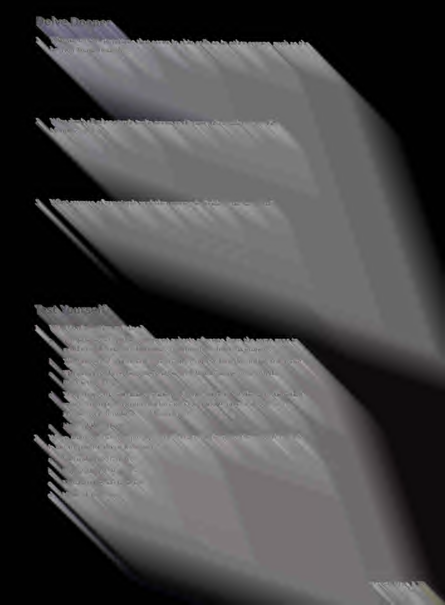
Q002p87
What is alternative splicing?
- A)(Sy
- A)b.
Q003p87
Why don’t all phenotypic traits occur as discrete, alternative states like
- A)(Sy
- A)b.
Q004p87
What sources of genotypic variation among individuals are random?
- A)(Sy
- A)b.
Q005p89
Why don’t all phenotypic traits occur as discrete, alternative states like
- A)Because variation in the environment can lead to variation in the
- B)Because the variation in some traits can be attributed to the cumulative
- C)Because phenotypes result from complex interactions between many
- D)aandc
- E)Allof the above
- A)By increasing the likelihood that an individual will have multiple offspring
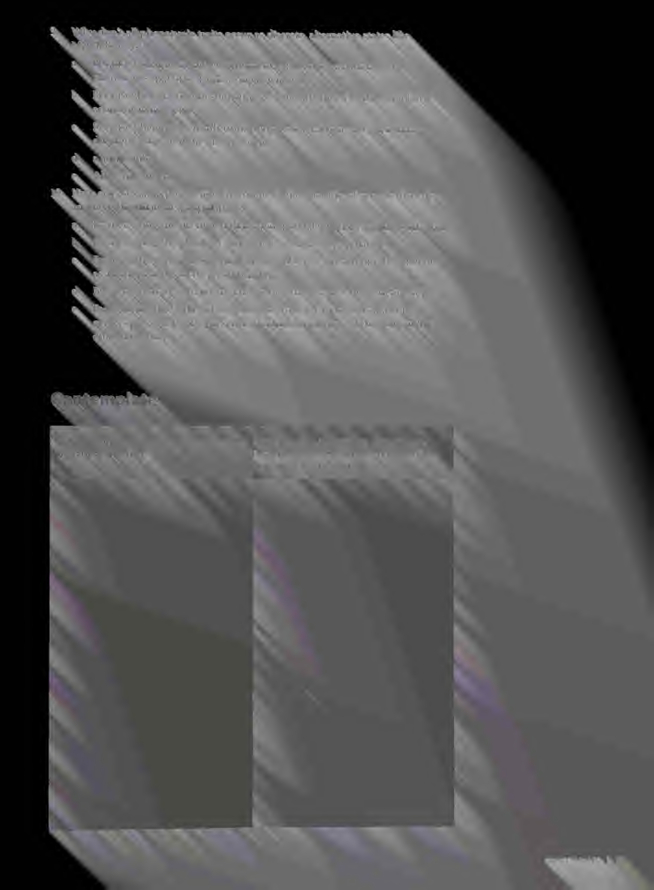
Q006p89
How does sexual reproduction contribute to the quantity of genetic diversity
- A)By increasing the likelihood that an individual will have multiple offspring
- C)By separating, combining, and mixing alleles as a result of independent
- D)By incorporating somatic mutations into the gametes or germ-line cells
- E)By reducing the ability of an autosome to mask mutations affecting
Ch 06 — The Ways of Change: Drift and Selection
Q001p90
According to the text, what is an organism’s phenotype?
- A)The interaction of an organism’s genes with the environment to produce character-
- B)Characteristics of an organism that can be classified into discrete categories, such as
- C)Any aspect of an organism that can be measured, such as how it looks, how it
- D)The genetic makeup of an individual
- E)Bothbandd
- A)One
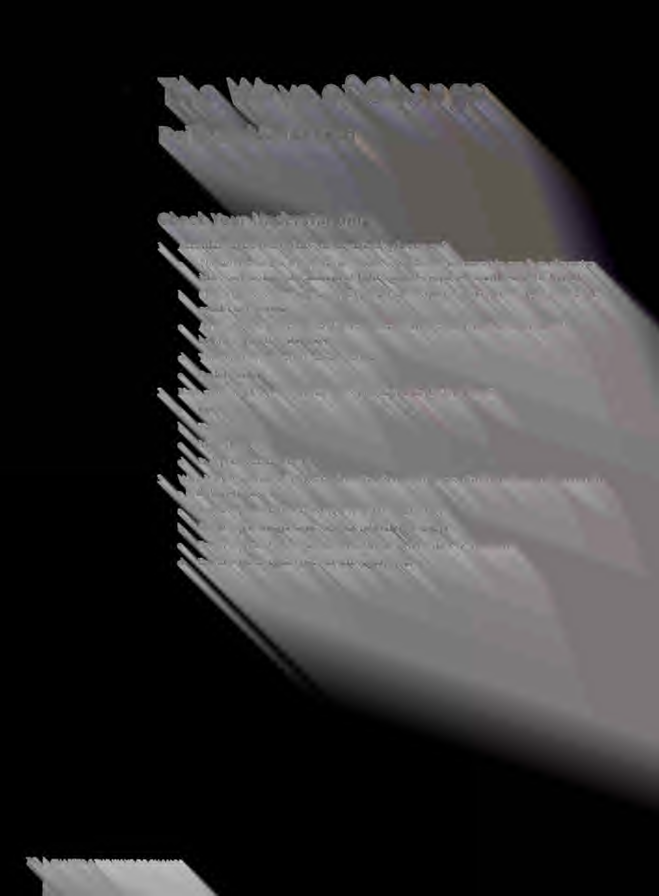
Q002p90
How many alleles can a genetic locus in a diploid individual have?
- A)One
- B)Two
- C)More than two
- D)It depends on the locus.
- A)Because phenotypic traits are a result of dominance
- B)Because phenotypic traits are not related to genotypes
Q003p90
Why is the variation of phenotypic traits often continuous, distributed around a mean in
- A)Because phenotypic traits are a result of dominance
- B)Because phenotypic traits are not related to genotypes
- C)Because phenotypic traits are only influenced by the environment
- D)Because phenotypic traits are often polygenic
Q004p108
Why has the evolution of resistance to insecticides in mosquitoes been
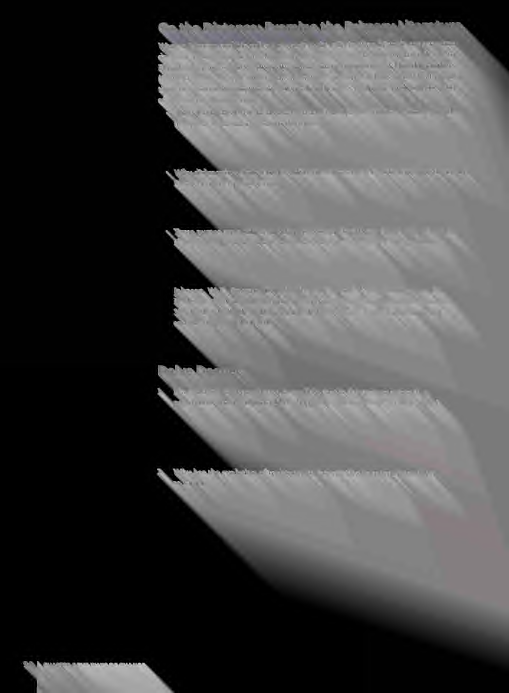
Q005p110
Which of these statements about balancing selection is TRUE?
- A)It is possible only in sexually reproducing species.
- B)It is responsible for maintaining the S allele for sickle-cell anemia
- C)It is not possible when heterozygotes have a higher fitness.
- D)It is why sickle-cell anemia is selected against in areas with high levels
- E)None. All are false statements.
- A)Some individuals are more likely to breed with other individuals, and so
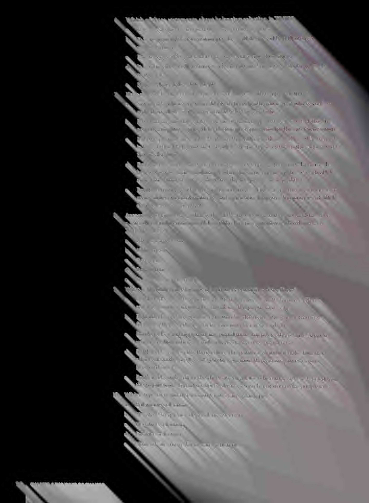
Q006p111
What does an inbreeding coefficient of 0.25 signify?
- B)0.25 is the average probability that alleles at two loci in an individual are
- E)0.25 is the inbreeding coefficient of a child produced by a brother and
- A)Because endangered species often have small populations prone
- B)Because rare, recessive alleles can become expressed in a homozygous
- C)Because inbreeding depression can affect reproductive rates of
- D)Because inbreeding depression
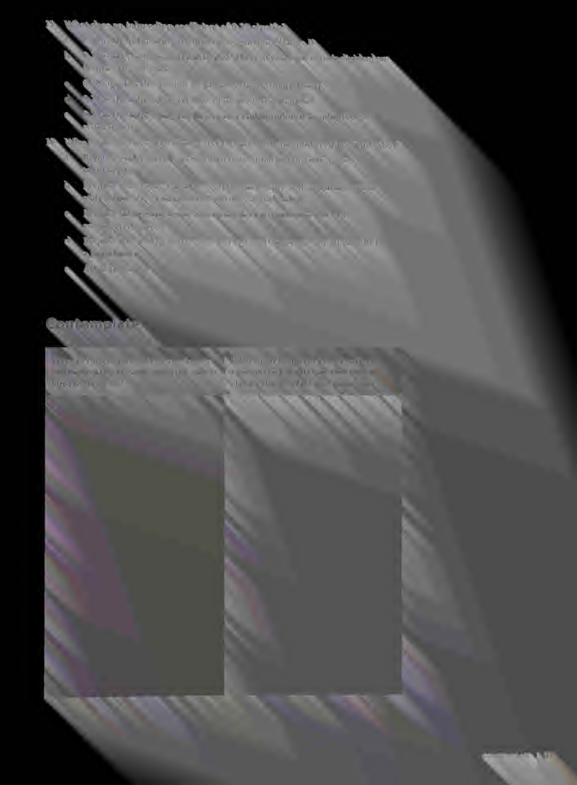
Q007p111
Why would conservation biologists be concerned about inbreeding depression?
- A)Because endangered species often have small populations prone
- B)Because rare, recessive alleles can become expressed in a homozygous
- C)Because inbreeding depression can affect reproductive rates of
- D)Because inbreeding depression can reduce the genetic variation within
- E)Allof the above
Q008p112
What is the difference between polyphenic traits and polygenic traits?
- A)Polyphenic traits are the different traits that arise because different alleles lead to
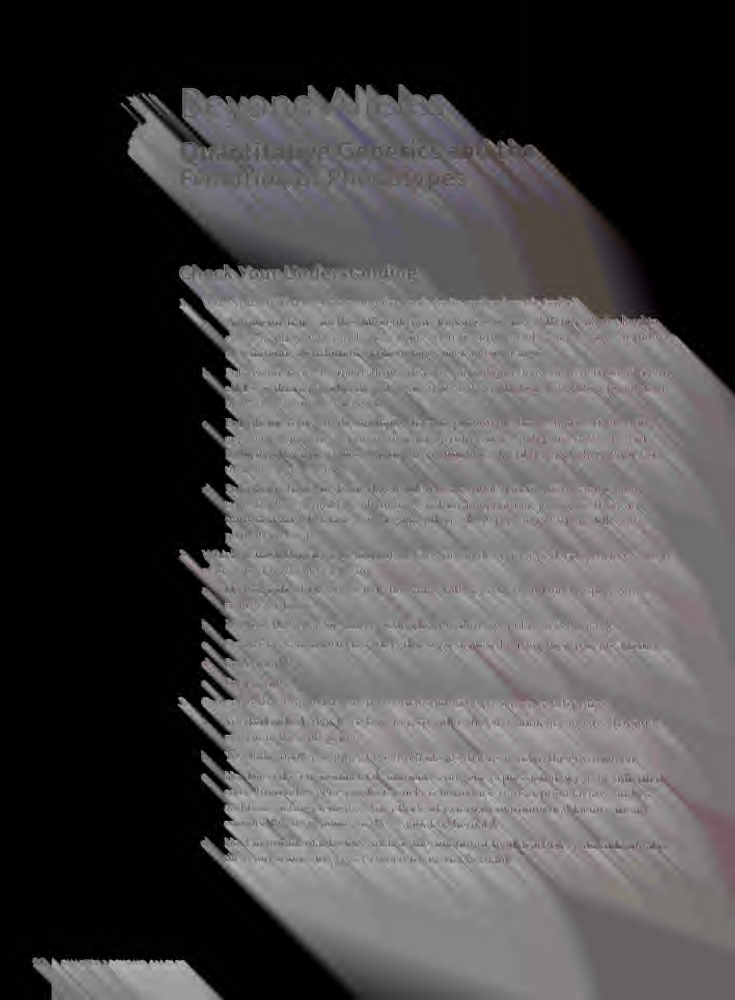
Q009p112
Which of the following were important facts in Charles Darwin’s development of theory
- A)b.
- A)98 | CHAPTER7 BEYOND ALLELES
Q010p112
Can genes that respond to environmental stimuli be passed on to offspring?
- A)98 | CHAPTER7 BEYOND ALLELES
Q011p113
Broad sense heritability (H?) __
- A)The proportion of the total phenotypic variance
- B)The proportion of the total phenotypic variance of a trait attributable to the additive
- C)The pattern of phenotypic expression of a single genotype across a r
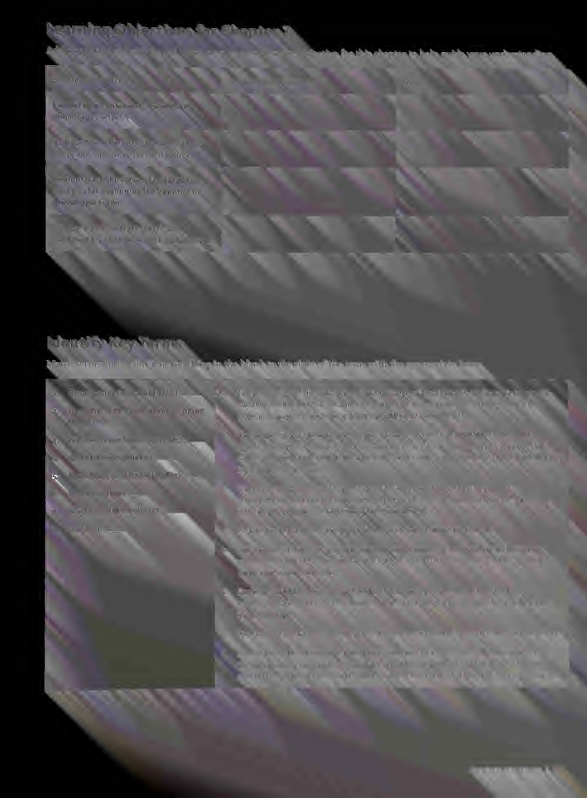
Q012p113
Narrowsense heritability (h?)
- C)The pattern of phenotypic expression of a single genotype across a range of
- D)A statistical measure of the dispersion of trait values about their mean.
- E)This process involves of scanning through the genomes of many different individuals,
Ch 07 — Beyond Alleles: Quantitative Genetics and the Evolution of Phenotypes
Q001p123
Do populations that experience selection always evolve? Why or why not?
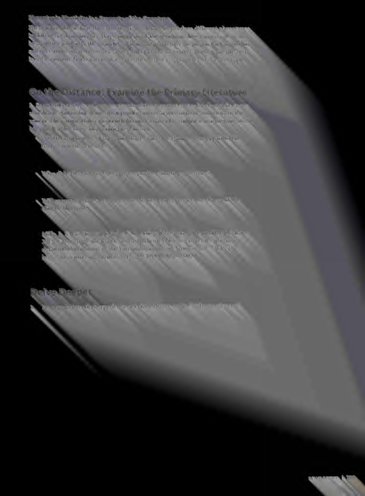
Q002p125
According to Figure 7.13, how did Hoekstra and colleagues test whether the
- A)They conducted a second hybridization study and found that coat color
- A)ec:
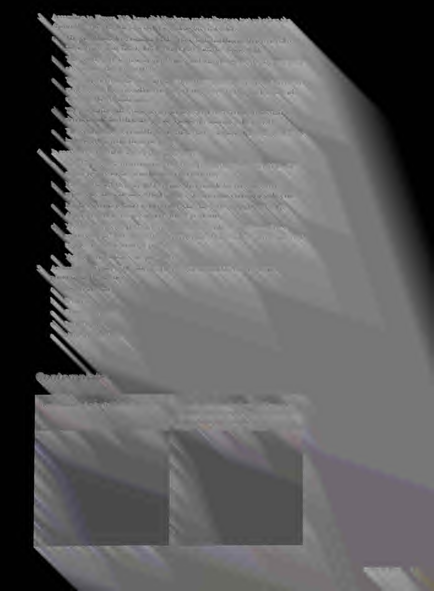
Q003p125
Is coat color in oldfield mice a polygenic trait?
- A)ec:
- A)Age at maturity
- B)Fertility
- C)Chromosome IV
- D)Bothaandb
Q004p125
According to Figure 7.21, which trait(s) of Caenorhabditis elegans is/are
- A)Age at maturity
- B)Fertility
- C)Chromosome IV
- D)Bothaandb
- E)None of the above
Q005p126
From which sources does variation among individuals ultimately arise?
- A)Genetic recombination
- B)Mutation
- C)Independent assortment
- D)All of the above
- E)None of the above
- A)Genetic drift because it can only occur when individuals are very different from
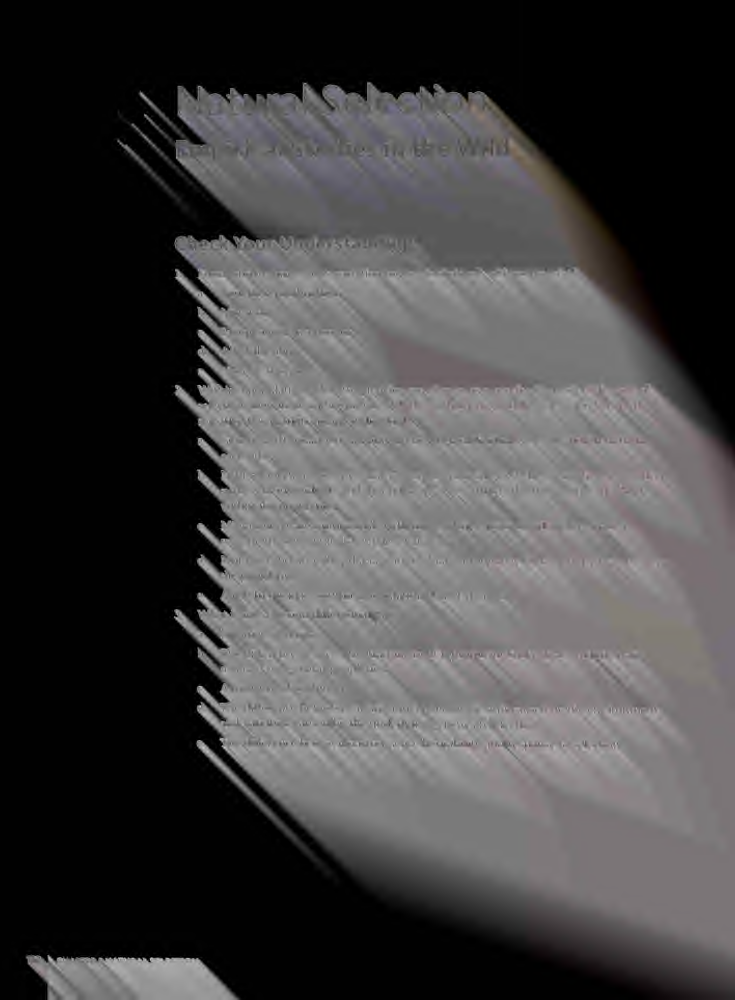
Q006p126
What is the selection differential (S)?
- A)Negative selection
- C)A measure of evolution
- D)The difference between variation in a phenotypic trait caused by the environment
- E)The difference between narrow sense heritability and response to selection
Ch 08 — Natural Selection: Empirical Studies in the Wild
Q001p136
How many different lines of evidence allowed scientists to reconstruct the re-
- A)A large and significant change in mean beak size for the finch population
- B)Directional selection on beak size
- C)The year selection changed directions
- D)All of the above
- E)None of the above
- A)Because the light coat color would only result with mutations to both
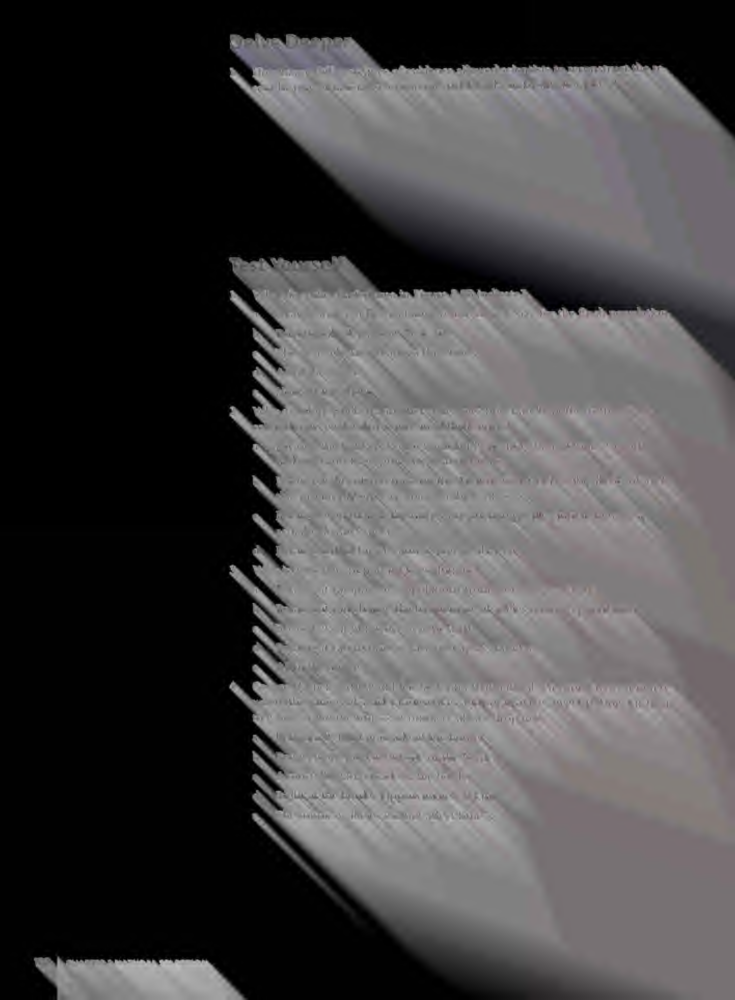
Q002p136
What does the shaded area in Figure 8.5B indicate?
- A)A large and significant change in mean beak size for the finch population
- B)Directional selection on beak size
- C)The year selection changed directions
- D)All of the above
- E)None of the above
- A)Because the light coat color would only result with mutations to both
Q003p136
Why did Hopi Hoekstra and her colleagues reject the hypothesis that light
- A)Because the light coat color would only result with mutations to both
- B)Because light-colored mice on the Atlantic Coast lacked the alleles of Mcir
- C)Because even though the mice were phenotypically similar, they were
- D)Because oldfield mice cannot migrate that far
- A)Because it can prevent populations from becoming isolated
- B)Because it can change the frequencies of alleles within a population
Q004p136
Why is gene flow important to evolution?
- A)Because it can prevent populations from becoming isolated
- B)Because it can change the frequencies of alleles within a population
- C)Because it can influence genetic drift
- D)Because it can minimize variation across habitats
- E)All of the above
- A)b.
Q005p138
Given your experience with selective agents, why might natural selection favor
- A)Because cane toads were significantly larger shortly after their introduction
- B)Because cane toads exhibit variation in size
- C)Because cane toad predators were likely larger and more resistant in their
- D)Because cane toads can only eat small prey in the new habitat
- E)Natural selection does not favor smaller body size in cane toads.
- A)Harvested bighorn sheep have shorter horns and are less fit than unhar-
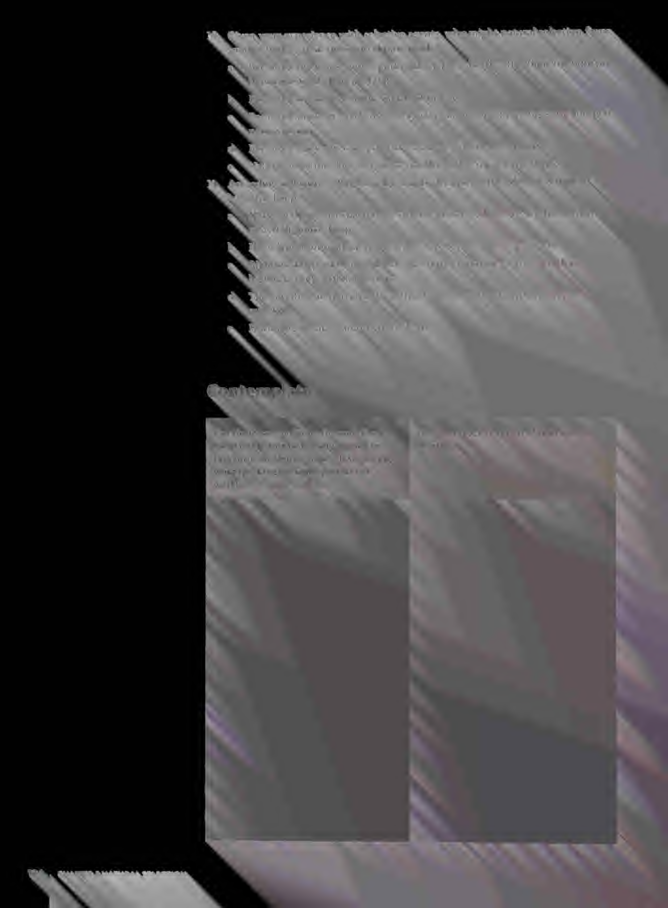
Q006p138
According to Figure 8.28B, how has trophy hunting affected horn length of
- A)Harvested bighorn sheep have shorter horns and are less fit than unhar-
- B)Horn length in bighorn populations has been reduced by 20 cm.
- C)Bighorn sheep with small horns are more commonly harvested than
- D)The variation in horn length within bighorn populations has declined
- E)Horn length varies among individuals.
Q007p139
Which of the following is NOT a mutation that potentially alters DNA of future
- A)Chromosome fusion
- B)Deletion
- C)Insertion
- D)Point mutation
- E)Morphogen
- A)b.
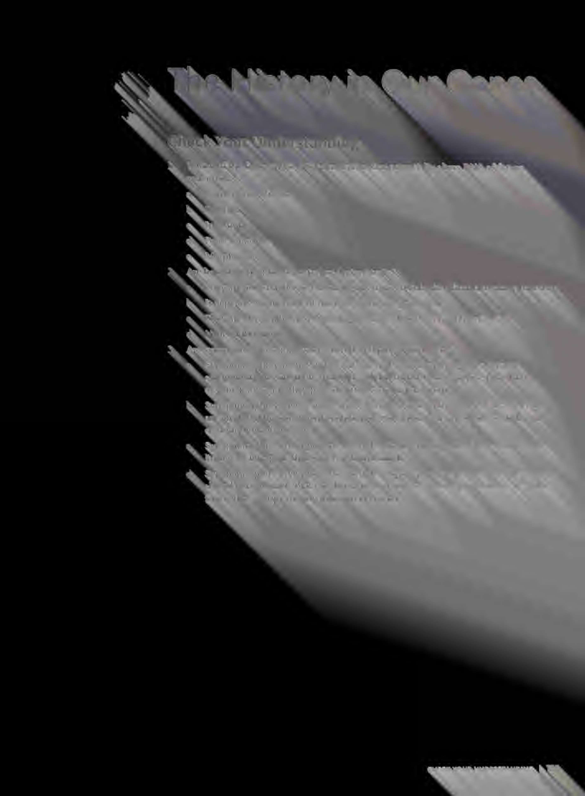
Ch 09 — The History in Our Genes
Q001p151
What is meant by coalescence?
- A)The process of tracing homologous alleles back to a common ancestor
- B)The history of an allele within a population
- C)The point in the history of a genetic locus when it becomes polymorphic
- D)All of the above
- E)None of the above
- A)b.
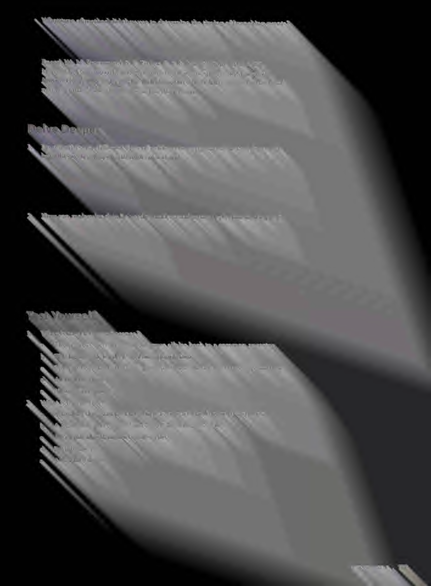
Q002p151
How can molecular data be used to understand natural selection in the past?
- A)The process of tracing homologous alleles back to a common ancestor
- B)The history of an allele within a population
- C)The point in the history of a genetic locus when it becomes polymorphic
- D)All of the above
- E)None of the above
- A)b.
Q003p151
What is a gene tree?
- A)b.
- D)(oh
Q004p153
Why do scientists consider APOAV a conserved gene?
- B)Because mice evolved before humans
- C)Because mice produce fewer triglycerides than humans
- D)Because of the high level of homology between mice and humans
- E)Because it encodes a protein important to lipid regulation
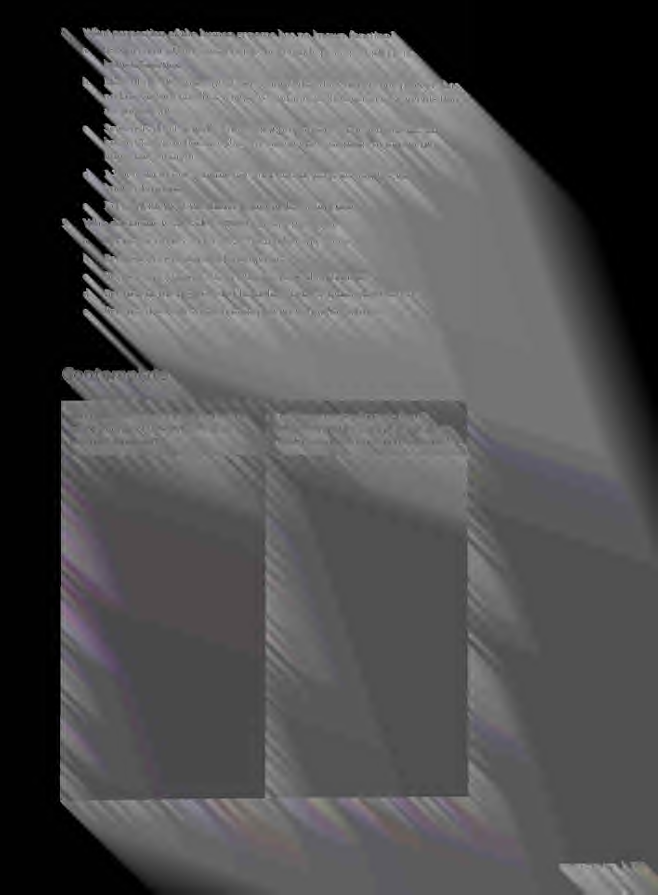
Ch 10 — Adaptation: From Genes to Traits
Q001p154
Which of the following statements about genetically controlled traits is true?
- A)(Ss
- A)b.
- D)ee
- A)Stretches of DNA that are located far away from a focal gene
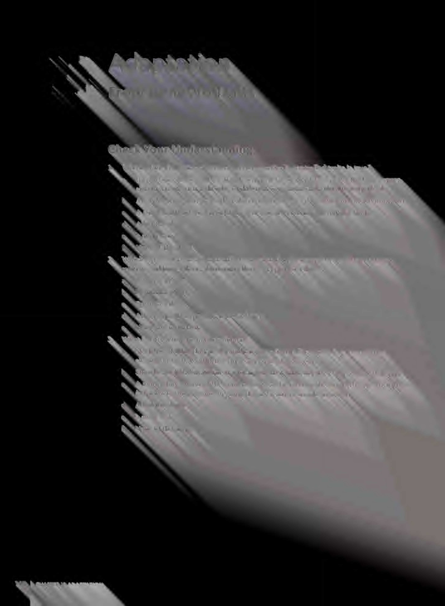
Q002p154
Which effects of a mutation contribute most to the phenotypic resemblance among
- A)b.
- D)ee
- A)Stretches of DNA that are located far away from a focal gene (e.g., on another
Q003p154
What is a cis-acting regulatory element?
- A)Stretches of DNA that are located far away from a focal gene (e.g., on another
Q004p168
Why are gene networks important in the evolution of new traits ¢
- A)Because gene networks lead to the quantitative traits that scientists are
- B)Because within a gene network, a single mutation can have cascading
- C)Because gene networks act like self-contained “modules” that can be
- D)Because mutations to upstream genes can truncate the entire pathway,
- E)All of the above
- A)Initially, only a small proportion of one lineage of E.
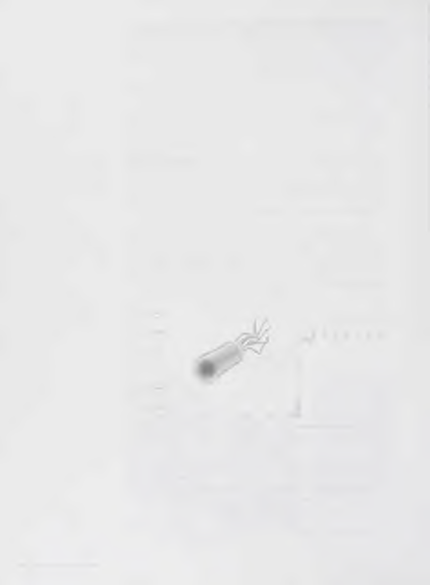
Q005p168
Which of the following statements about Richard Lenski’s E. coli populations
- A)Initially, only a small proportion of one lineage of E. coli could feed
- B)Citrate feeding did not evolve in the lineage for 30,000 generations.
- C)The citrate feeding trait quickly came to dominate the E. coli lineage.
- D)One generation of E. coli showed significant variation in the citrate
- E)The frequency of citrate feeding was highly variable in all generations
Q006p169
Mutations to which genes in the limb patterning network led to the loss of legs
- A)None. Snakes don’t have legs, so they don’t have genes for legs.
- B)Hedgehog (Hh) and sonic hedgehog (Shh)
- C)Bmp2and Dpp
- D)Hox genes and sonic hedgehog (Shh)
- E)Hedgehog (Hh) and Hox genes
- A)Jellyfish eyes are more similar to octopus eyes than they are to insect eyes.
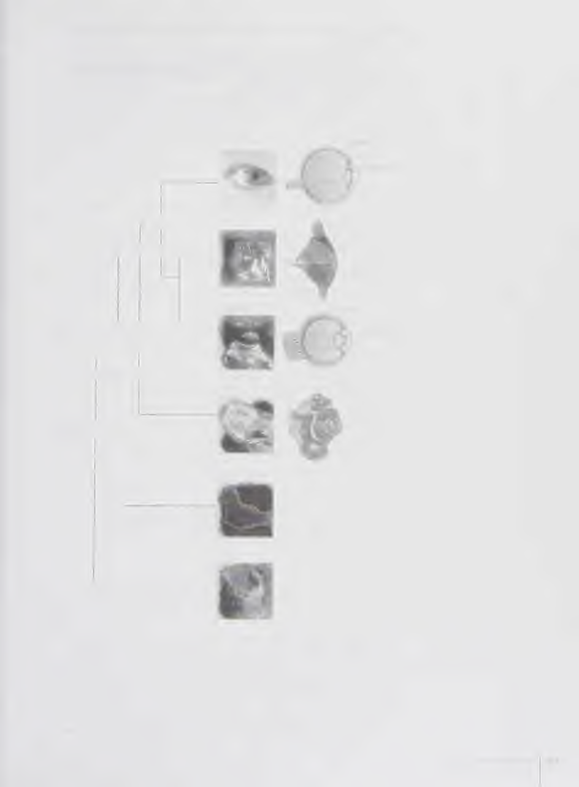
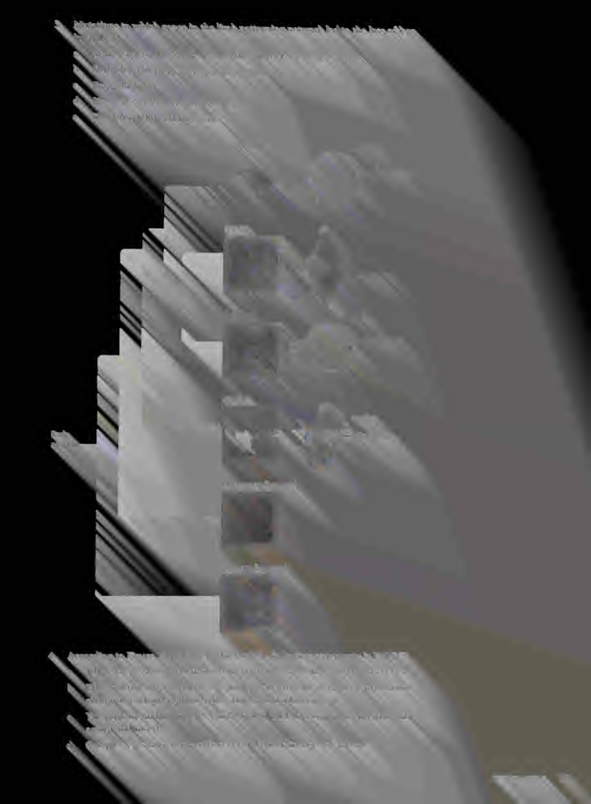
Q007p169
According to Figure 10.2 (above), which of the following statements is FALSE?
- A)Jellyfish eyes are more similar to octopus eyes than they are to insect eyes.
Ch 11 — Sex: Causes and Consequences
Q001p183
In Figure 11.27, the genus Homo is included. What does the position of the
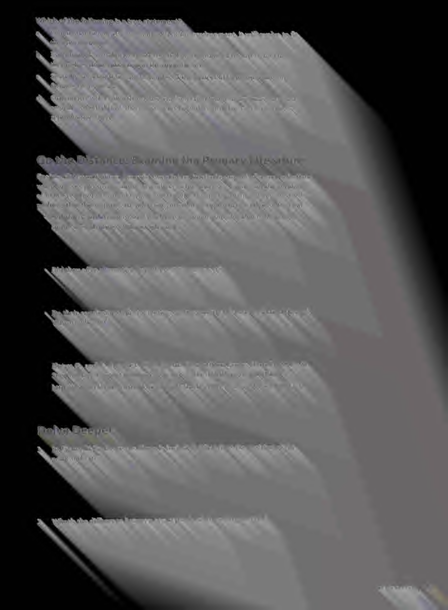
Q002p183
What's the difference between sex, reproduction, and copulation?
Q003p184
Which of the following is a type of sexual dimorphism?
- A)Males bigger than females
- B)Males smaller than females
- C)Males more brightly colored than females
- D)Females bigger than males
- E)All of the above are sexually dimorphic.
- A)Polyandry is a mating system where many males mate with a single female.
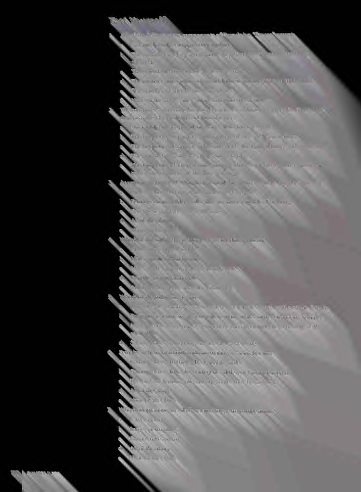
Q004p184
Which of the following is true?
- A)Polyandry is a mating system where many males mate with a single female.
- C)Monogamy is a mating system where a male and female mate only with
- D)Social and sexual monogamy are the same thing.
- A)Gaining access to the highest quality males.
- B)Gaining access to males with genes different from their own.
- C)The costs of fending off courting males may be too high.
Q005p184
Which adaptations are likely related to sperm competition?
- A)Large sperm
- B)Large sperm plugs
- C)Cooperative sperm
- D)All of the above
- E)None of the above
Q006p186
How does sexual selection differ from natural selection?
- A)(ee
- A)b.
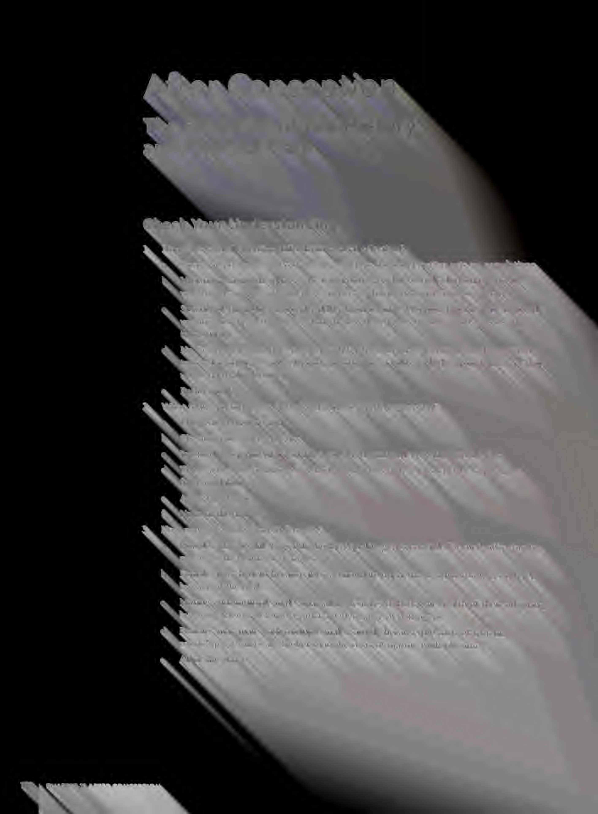
Q007p186
What is an/are important factor(s) influencing gene expression?
- A)b.
- A)CHAPTER 12 AFTER CONCEPTION
Q008p186
How may polyandry benefit females?
- A)CHAPTER 12 AFTER CONCEPTION
Ch 12 — After Conception: The Evolution of Life History and Parental Care
Q001p197
How might parent-offspring conflict factor into sex-ratio adjustment in
- A)Parents cannot adjust the sex ratios of their broods.
- C)Sex ratio adjustment only occurs in role-reversed species, so males choose
- D)Parents selectively feed some offspring and not others, so only the most
- E)The mechanisms are largely unknown, but substantial evidence indicates
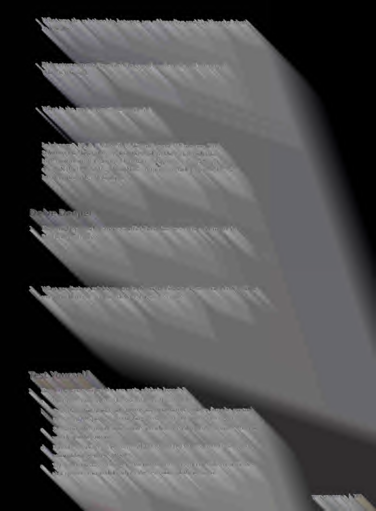
Q002p197
How do parents adjust the sex ratio of their broods?
- A)Parents cannot adjust the sex ratios of their broods.
- C)Sex ratio adjustment only occurs in role-reversed species, so males choose
- D)Parents selectively feed some offspring and not others, so only the most
- E)The mechanisms are largely unknown, but substantial evidence indicates
Q003p197
What predictions might you make about the timing of senescence in the differ-
- A)Parents cannot adjust the sex ratios of their broods.
- C)Sex ratio adjustment only occurs in role-reversed species, so males choose
- D)Parents selectively feed some offspring and not others, so only the most
- E)The mechanisms are largely unknown, but substantial evidence indicates
Q004p198
Which is the definition of senescence?
- A)The deterioration of the human mind as a person ages
- B)Alzheimer’s disease
- C)The deterioration in the biological functions of an organism as it ages
- D)The tradeoff between reproducing and living longer
- E)None of the above
- A)Because everything is a trade-off, and it makes sense that a female’s
Q005p198
Why would some scientists argue that menopause simply results from life-
- A)Because everything is a trade-off, and it makes sense that a female’s
- B)Because natural selection cannot act on individuals that no longer reproduce.
- C)Because genetic imprinting by males can cause females to become infertile
- D)Because the mechanism that leads to infertility in menopausal women
- E)All of the above
Ch 13 — The Origin of Species
Q001p212
Explain the concept of ring species with this semantic map by describing what
Q002p214
What are scientists discovering as they learn more and more about the genomic
- A)£. coli lineages are highly unpredictable.
- B)E. coli is actually many cryptic species.
- C)Among microbe “species,” E. coli is more diverse than others.
- D)Within a single “species,” microbial strains may not be that closely
- E)Microbe “species” are highly adaptable because of the immense amounts of
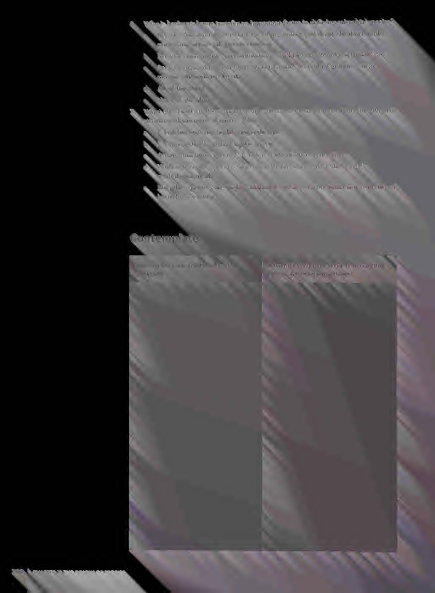
Q003p215
What is speciation?
- A)b.
- D)es
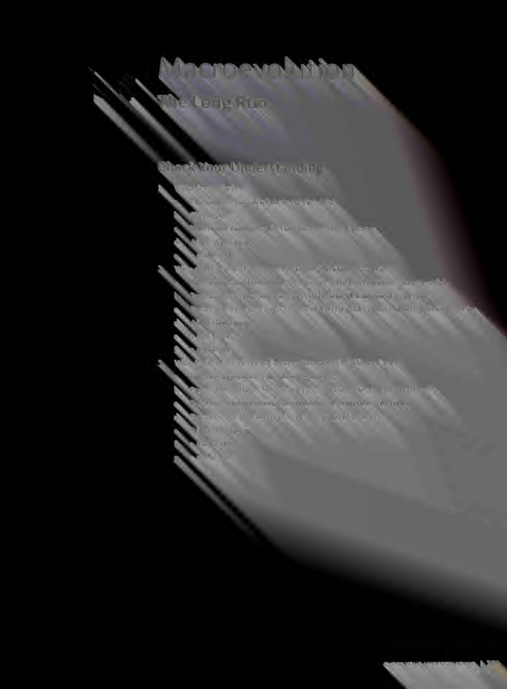
Ch 14 — Macroevolution: The Long Run
Q001p227
What is a turnover rate?
- A)The total number of originations and extinctions in a given interval of time
- B)The number of species present in a particular area at a given time
- C)a minus 2) divided by a
- D)Originations minus extinctions
- E)Extinctions minus originations
- A)Biogeography is study of the distribution of species across space and time.
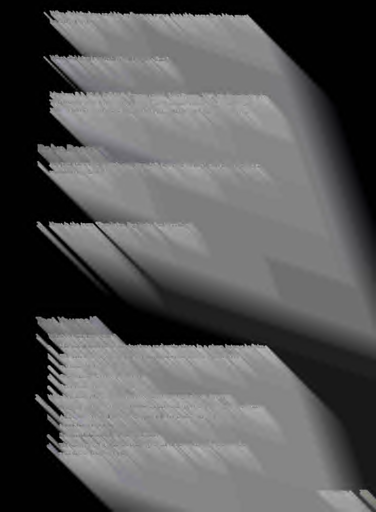
Q002p227
How is the term “Cambrian Explosion” misleading?
- A)The total number of originations and extinctions in a given interval of time
- B)The number of species present in a particular area at a given time
- C)a minus 2) divided by a
- D)Originations minus extinctions
- E)Extinctions minus originations
- A)Biogeography is study of the distribution of species across space and time.
Q003p227
Which of the following statements about biogeography is FALSE?
- A)Biogeography is study of the distribution of species across space and time.
Q004p228
What key innovation led to an adaptive radiation of insects?
- A)b.
- D)€.
- A)214 | CHAPTER
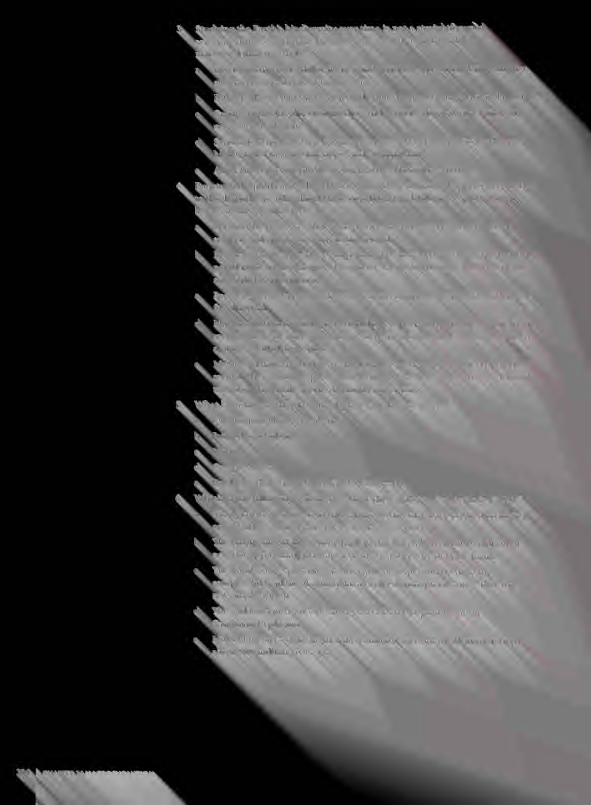
Q005p228
Which of the following statements about the Cambrian Explosion is FALSE?
- A)214 | CHAPTER
Q006p229
How are mass extinctions defined?
- A)Asa
- B)As any large number of species that disappears at a point in the strati-
- C)As the extinction of many species in a short period of time
- A)Because according to models incorporating a variety of scenarios, projected
- B)Because four of the big five mass extinctions were related to climate changes
- C)Because the average temperature has increased by 0.8 in the last 80 years
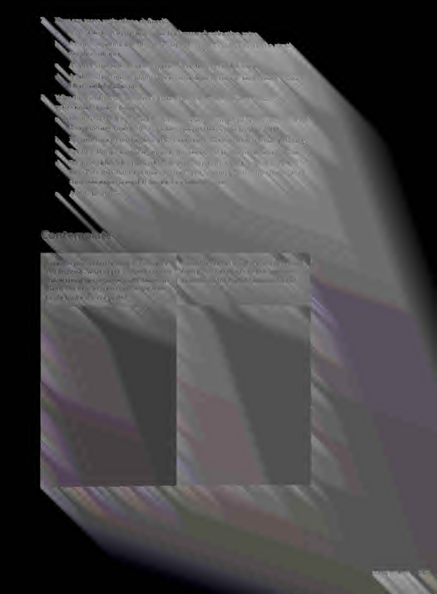
Q007p229
Why do scientists argue that climate change may be leading to a mass
- A)Because according to models incorporating a variety of scenarios, projected
- B)Because four of the big five mass extinctions were related to climate changes
- C)Because the average temperature has increased by 0.8 in the last 80 years
- D)Because although carbon dioxide concentrations clearly cycle, in the last
- E)All of the above
Q008p230
Which of the following statements are depicted by this phylogeny?
- A)Otters (Lutrinae) evolved from martins (Martes group).
- C)Living otters (Lutrinae) represent the end of a lineage of animals whose common
- D)Otters (Lutrinae) share a common ancestor with Odobenidae (walruses).
- E)All of the above are dep
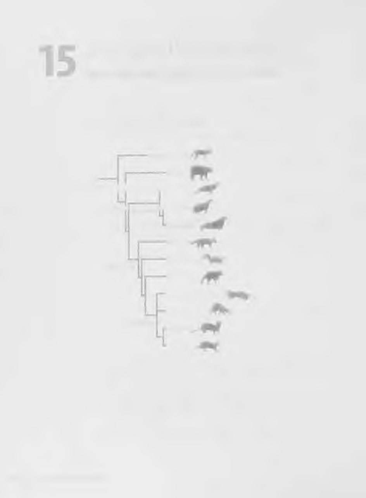
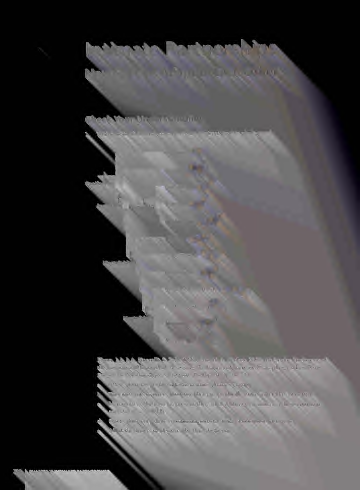
Q009p231
What is a species?
- A)Groups of actually (or potentially) interbreeding natural populations that
- B)The smallest possible groups whose members are descended from a com-
- C)Metapopulations of organisms that exchange alleles frequently enough that
- D)All are valid definitions of a species.
- E)Scientists don’t know what a species actually is.
- A)A bacterium or viral parasite
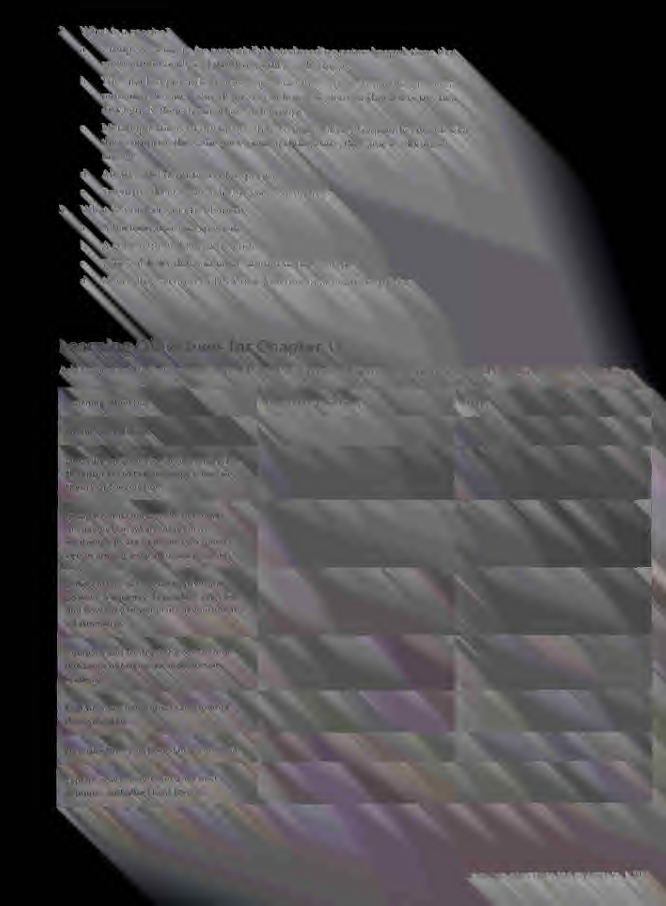
Q010p231
What is a mobile genetic element?
- A)A bacterium or viral parasite
- B)A gene with no known function
- C)Types of DNA that can move around in the genome
- D)Noncoding sections of DNA that function in alternative splicing
Ch 15 — Intimate Partnerships: How Species Adapt to Each Other
Q001p241
How do variation among individuals, differential survival or reproduction,
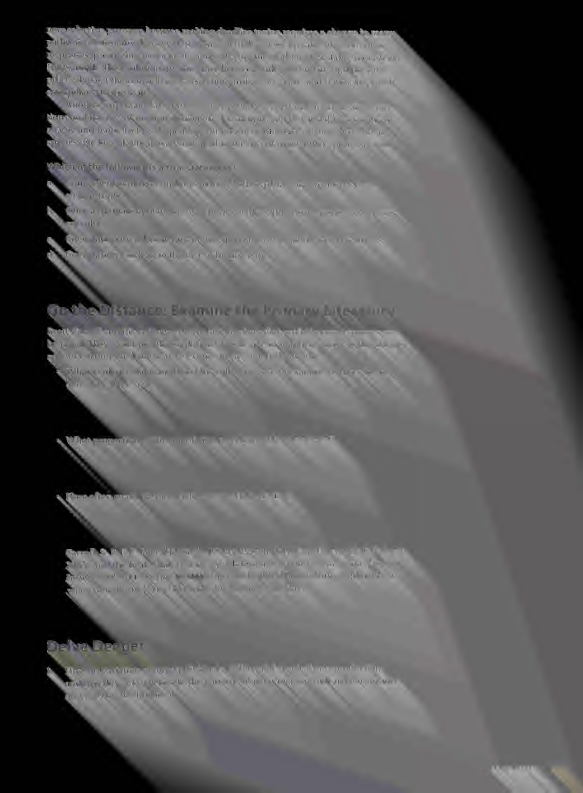
Q002p244
What did Sandra Anderson and her colleagues demonstrate by manually
- A)d.
- A)b.
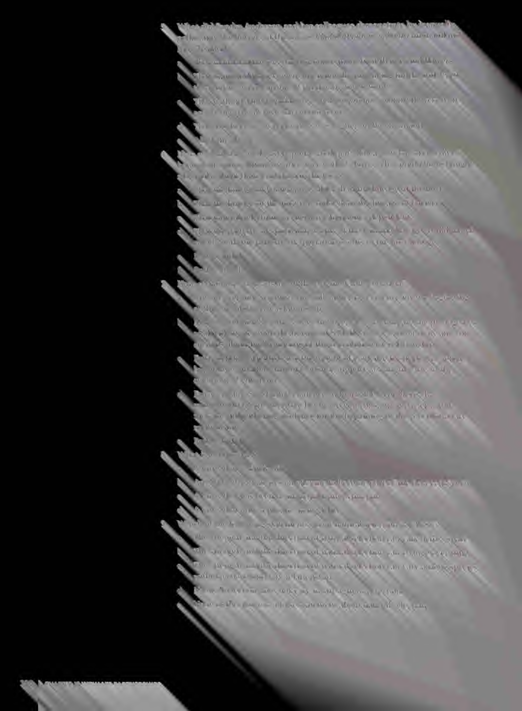
Q003p244
How certain are scientists about the origin of mitochondria?
- A)b.
- D)A virus th
Q004p244
What is a retrovirus?
- A)b.
- D)A virus that is fairly old
- A)230 | CHAPTER 15 INTIMATE PARTNERSHIPS
Q005p244
Which of the following statements about natural selection is FALSE?
- A)230 | CHAPTER 15 INTIMATE PARTNERSHIPS
Ch 16 — Brains and Behavior
Q001p246
What kind of variation is necessary for natural selection to occur?
- A)Differential reproductive success of individuals in the population and the strength
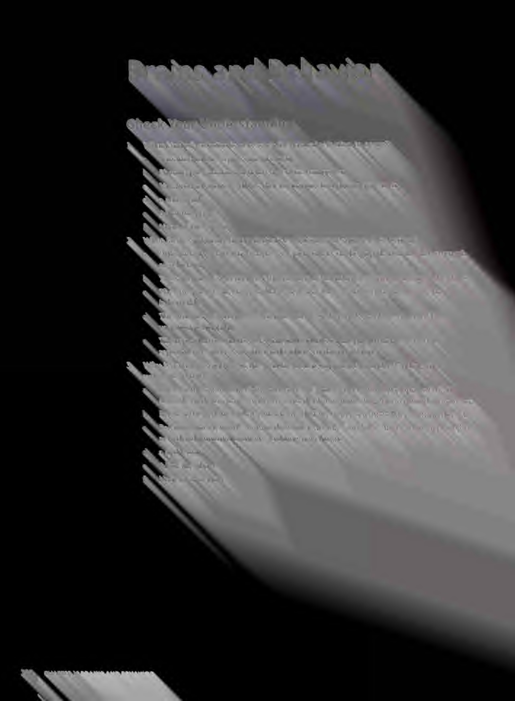
Q002p246
What factors influence a population’s evolutionary response to selection?
- A)Differential reproductive success of individuals in the population and the strength
- A)CHAPTER 16 BRAINS AND BEHAVIOR
Q003p246
Why is an understanding of the genetic toolkit important to understanding the
- A)CHAPTER 16 BRAINS AND BEHAVIOR
Q004p257
What’s the difference between learning and the evolution of learning behavior?
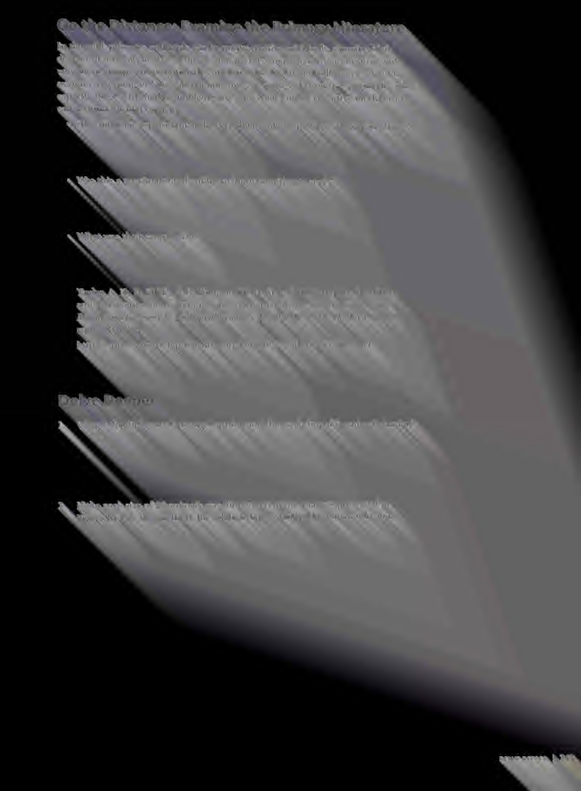
Q005p258
Which of the following statements about the three graphs in Figure 16.6 is FALSE
- A)Graph A includes replicates of the experiment; graphs B and C do not.
- C)The three graphs define behavior differently and use different measures
- D)All three graphs show that scientists conducting experiments can function
- E)Only graphs A and C include the variation within each generation
- A)The trap of a Venus flytrap snaps shut in less than a second.
- B)Tobacco plants that produce nicoti
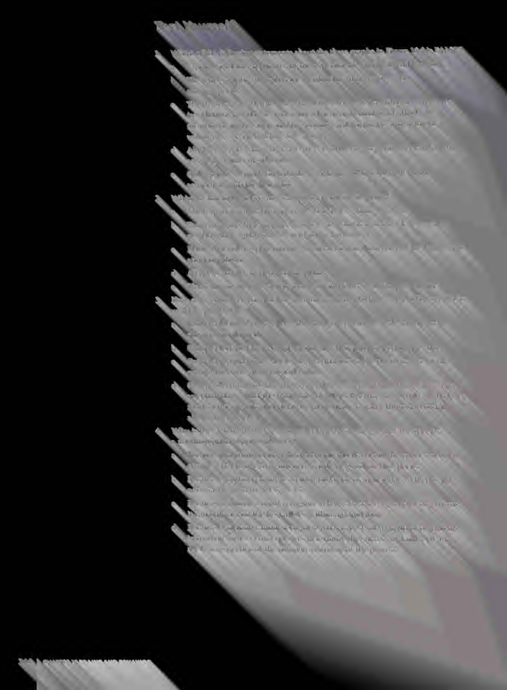
Q006p258
Which of the following is an example of behavior in plants?
- A)The trap of a Venus flytrap snaps shut in less than a second.
- B)Tobacco plants that produce nicotine and shunt it to their leaves when
- C)Plants that release pheromones to attract natural enemies of the herbivores
- D)All are examples of behavior in plants.
- E)Plants do not behave; seeing behavior in plants is anthropomorphic.
- A)Group selection favors alleles that the group and the individual need to
Q007p258
How does group selection differ from individual selection in the effect on alleles
- A)Group selection favors alleles that the group and the individual need to
- B)Group selection favors cooperation and individual selection does not.
- C)Group selection favors alleles that contribute to the performance of the
- D)Group selection does not affect the alleles within a population; individual
- A)Because evolution occurs when the individuals within the species need to
Q008p258
Why is the statement that “evolution happens for the good of the species”
- A)Because evolution occurs when the individuals within the species need to
- B)Because evolution promotes selfish behavior of individuals, which is not
- C)Because evolution cannot recognize what is best for a group of organisms;
- D)Because evolution cannot recognize what is best for a group of organisms;
Q009p260
Which of the following statements about fruit flies and learning-in Figure 16.34
- A)Flies with a higher learning index live longer than flies with a lower
- B)Both high learning and control flies had similar survival at day 0 and at
- C)At 50 days, 20 percent fewer high learning flies were alive than control flies.
- D)Normal flies were better learners early in their lives, but that advantage
- E)The learning index was not that different between normal flies and long-
- A)Because complex social cognition may lead to extended interaction
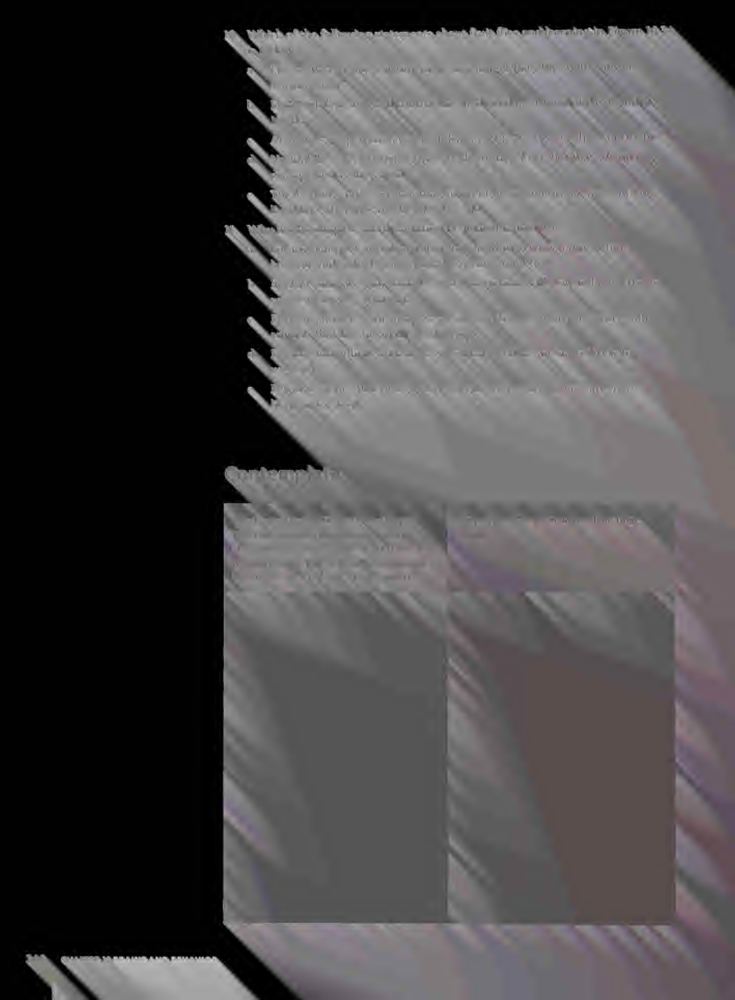
Q010p260
Why might complex social cognition be related to tool use?
- A)Because complex social cognition may lead to extended interaction
- B)Because animals with complex social cognition skills live in large groups
- C)Because animals with complex social cognition have larger brains than
- D)Because individuals with more social connections are more likely to
- E)Because species that live in more socially connected groups are more
Q011p261
Why are phylogenies such important tools in evolutionary biology?
- A)c:
- A)(oh
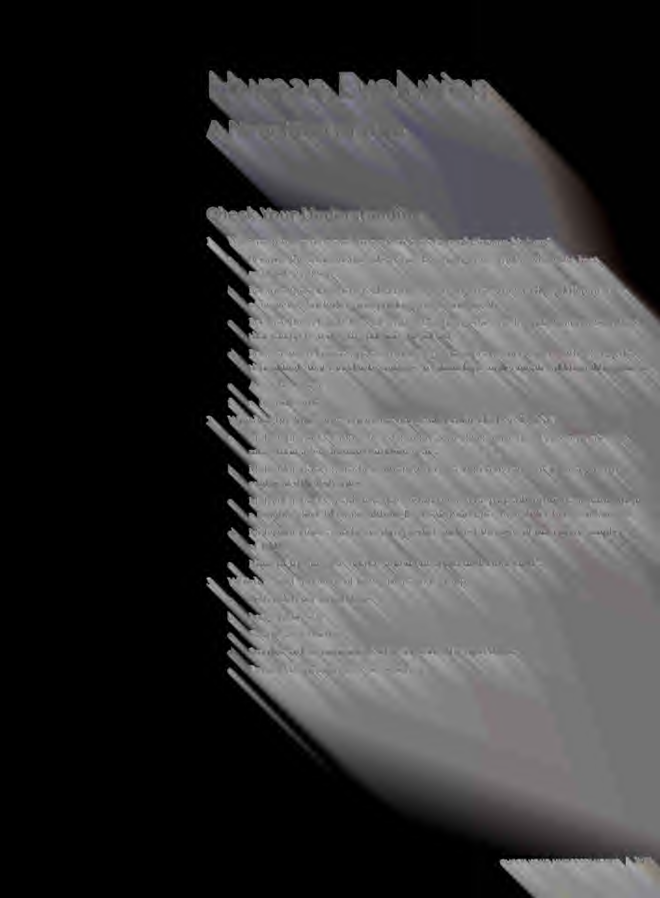
Q012p261
Which of the following statements about molecular clocks is FALSE?
- A)(oh
- A)b.
Q013p261
Which is NOT a benefit of living in a social group?
- A)b.
Ch 17 — Human Evolution: A New Kind of Ape
Q001p280
Which of the following statements is TRUE according to Figure 17.35?
- A)The peoples of Europe separate out perfectly according to the genetic struc-
- B)The genetic structure of European populations is too complex to observe
- C)Isolated countries tend to have greater differences in their genetic structure
- D)The high levels of clumping that align with the geography of Europe are
- E)The genetic structure of European populations indicates a high likelihood
- A)He artificially increased the expression of a vasopressin receptor in some
Q002p280
How did Larry Young test whether vasopressin activity affected mate-
- A)He artificially increased the expression of a vasopressin receptor in some
- B)He artificially increased the expression of a vasopressin receptor in some
- C)He artificially increased the expression of a vasopressin receptor in some
- D)All of the above
- E)bandc
Q003p284
What may appear to be disease may actually be an
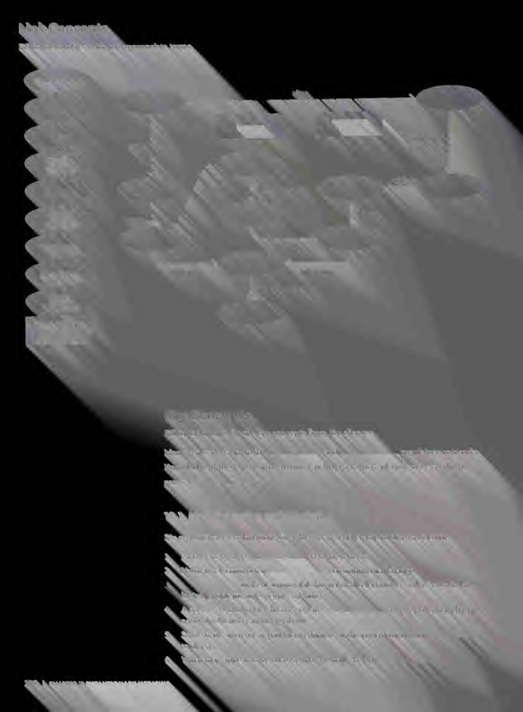
Ch 18 — Evolutionary Medicine
Q001p293
How might repeated infections function to enable host shifting in some pathogens?
Q002p293
Why do devastating diseases, such as Huntington’s disease, continue to
Q003p293
What are the three conditions necessary for evolution by natural selection to occur?
Q004p296
Which of these statements about vaccines is TRUE?
- A)Vaccines against flu viruses are usually ineffective because viruses have
- A)High mutation rates
- B)Horizontal gene transfer
- C)Sub-lethal doses of antibiotics
- D)All of the above facilitate the evolution of resistance.
- E)None of the above facilitates the evolution of resistance.
Q005p296
What factors associated with the evolutionary biology of bacteria facilitate the
- A)High mutation rates
- B)Horizontal gene transfer
- C)Sub-lethal doses of antibiotics
- D)All of the above facilitate the evolution of resistance.
- E)None of the above facilitates the evolution of resistance.
Q006p297
Why is understanding evolution important?
- A)Understanding evolution can help us understand biodiversity issues associ-
Q007p298
Which of the following statements about evolution is true?
- A)Once biologists find all the missing links, they will be able to understand
Q008p303
What kinds of evidence have scientists used to study the evolution of whales?
- A)Evidence from DNA
Q009p305
What is the difference between how scientists use the word theory and how it
Q010p306
Why is the study of stratigraphy important to understanding evolutionary theory?
- A)ai
Q011p309
How does homology relate to the theory of evolution?
- A)Homology refers to traits that only superficially look alike, like bat wings
- B)Homology
Q012p310
How accurate is radiometric dating?
- A)Not very accurate because scientists cannot know how much of a particular
Q013p311
Besides radiometric dating, what other lines of evidence can be used to deter-
- A)Stratigraphy
Q014p316
Why is heritable variation among individuals an important factor for
- A)Because variation has to be heritable for a species to survive
Q015p317
How can the phylogeny on the left be used to understand the phylogeny on
- A)The phylogeny on the left shows that you and your sister are more closely
Q016p321
According to the text, what is an organism’s phenotype?
- A)The interaction of an organism’s genes with the environment to produce
Q017p321
How many alleles can a genetic locus in a diploid individual have?
- A)One
Q018p322
Why is the variation of phenotypic traits often continuous, distributed around a
- A)Because phenotypic traits are a result of dominance
Q019p327
Why has the evolution of resistance to insecticides in mosquitoes been so rapid?
Q020p328
What is the difference between polyphenic traits and polygenic traits?
- A)Polyphenic traits are the different traits that arise because different alleles
Q021p329
Which of the following were important facts in Charles Darwin’s development
- A)No two individuals are exactly the same; rather, every population displays
Q022p329
Can genes that respond to environmental stimuli be passed on to offspring?
- A)Yes. Individuals that learn how to respond to the environment can pass
Q023p332
Do populations that experience selection always evolve? Why or why not?
- A)Genetic recombination
- B)Mutation
Q024p332
From which sources does variation among individuals ultimately arise?
- A)Genetic recombination
- B)Mutation
Q025p335
How many different lines of evidence allowed scientists to reconstruct the
Q026p336
Which of the following is NOT a mutation that potentially alters DNA of future
- A)Chromosome fusion
Q027p336
Are homologous traits ancestral or derived traits?
- A)They are ancestral because homologous traits are inherited from a
Q028p337
Are synapomorphies important when developing a phylogeny?
- A)Synapomorphies are not important when developing phylogenies because
- B)Synapomorphies are not important when developing phylogenies beca
Q029p340
Which of the following statements about genetically controlled traits is true?
- A)Interactions among alleles at different genetic loci (epistasis) can affect
Q030p340
How can molecular data be used to understand natural selection in the past?
Q031p342
Which effects of a mutation contribute most to the phenotypic resemblance
- A)Additive effects
Q032p346
What is the most important element necessary for natural selection to act?
- A)Individuals that can change to meet their needs
- B)Variation within a population
Q033p347
How does R = h’ x S apply to artificial selection?
Q034p348
Is phenotypic plasticity heritable?
- A)No. Phenotypic plasticity is the capacity of an individual to change in
Q035p352
What is an/are important factor(s) influencing gene expression?
- A)The gene control region
Q036p353
How may polyandry benefit females?
- A)Females may be able to get the highest-quality genes possible for their
Q037p357
Which of the following may explain the origin of a particular female
- A)Male biased operational sex ratios
Q038p357
How accurate is the current estimate for the age of the Earth (4.568 billion years) ?
- A)Not accurate at all because it is just an estimate
Q039p360
Explain the concept of ring species with this semantic map by describing what
Q040p362
Why isn’t the fossil record a complete record of life on Earth?
- A)Because organisms eat other organisms
Q041p367
What is a species?
- A)Groups of actually (or potentially) interbreeding natural populations that
Q042p368
What is a mobile genetic element?
- A)A bacterium or viral parasite
Q043p371
What kind of variation is necessary for natural selection to occur?
- A)Variation in the expression of a trait
- B)Phenotypic variation that has a genetic component
Q044p372
What factors influence a population’s evolutionary response to selection?
- A)Differential reproductive success of individuals in the population and the
Q045p373
Why is an understanding of the genetic toolkit important to understanding the
- A)Because the same underlying networks of genes govern the development of
Q046p376
Why are phylogenies such important tools in evolutionary biology?
- A)Because the relationships described by phylogenies are based on the best
Q047p377
Which of the following statements about molecular clocks is FALSE?
- A)Molecular clocks cannot be used to measure divergence in species separat-
Q048p378
Which is NOT a benefit of living in a social group?
- A)364 | ANSWERS